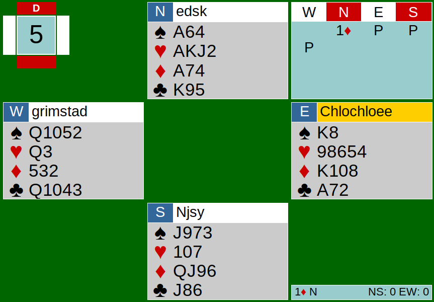
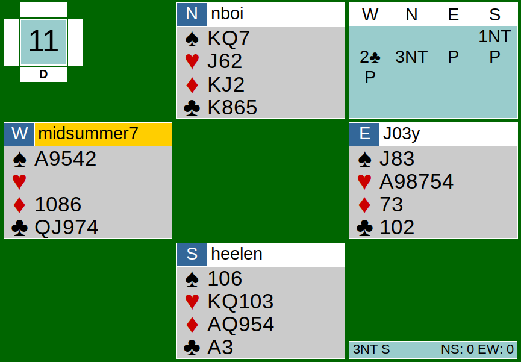
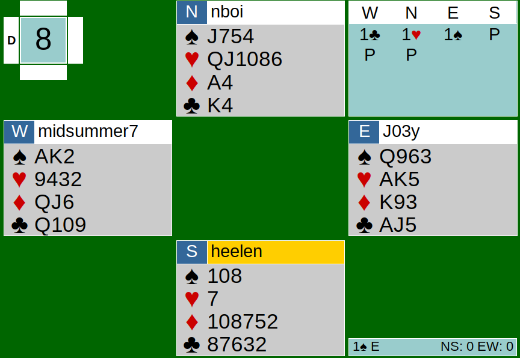

This write-up will be focusing on opening bids and doubles (takeout, penalty, negative). It may be a good refresher for all of us sometimes. We’ll be looking at auctions from the team game on Tuesday, June 30th.
Opening Bids
When you open a minor (1C or 1D), you show 3+ cards in that suit. When you open a major (1H or 1S), you show 5+ cards in that suit. Generally, you should open your longest major or minor when you have both suits. What should you open when you are 3-3 in minors (i.e you have 3 clubs and 3 diamonds)? Well, North is in that position in Board 5 shown below.

You should open your clubs when you are 3-3 in minors. North should have opened 1C here instead of 1D. Hypothetically speaking, what should you open when you are 4-4 in minors? 1C again? Nope, you should open your diamonds when you are 4-4 in minors.
Majors are a different story. When you hold 5 spades and 4 hearts (5-4 in majors), you would definitely open a spade first because that is your only 5-card major. What if one holds 5 spades and 5 hearts? Would you open a spade again? The answer is yes, you would open 1S when you are 5-5 in majors. This is because you do not have to force your partner to bid up to the three-level to support you. The auction may go: P - 1S (opening) - P - 1NT (resp.) - P - 2H.
The 2H bid would show at least 4 hearts, and if responder would rather play in spades, responder can just bid spades on the 2-level. If responder likes hearts and has no interest in game, responder can simply pass to the 2H bid.
If the auction went like: P - 1H (opening) - P - 1NT (resp.) - P - 2S, not only is the 2S a reverse, but more importantly, if the responder would rather play in hearts, responder would have to bid hearts on the 3-level. Correcting the contract to hearts on the 3-level is not the safest play, as responder can have as little as 6 points and the 3-level may be too high for them. This is why you always bid your spades before your hearts when you have 5-5 in each suit.

Let’s now talk a little about NT openings. Take a look at South’s hand shown above. South holds 15 points and a 5-4-2-2 distribution. Would you open 1NT here or stick with a diamond opening? The safer play is definitely the diamond opening rather than opening NT. South’s wimpy doubleton spades are not looking the brightest, and South has no idea how many points North holds. In this particular hand, NS ends up doing very well in a NT contract because North happens to have spade stoppers, but without the spade stoppers, this contract will likely be set. Since North does have opening values, 3NT was the right call at the end. 1NT openings can be tricky because the word “balanced” can be interpreted differently among players. Some may consider a distribution like this balanced, while others may cap it off at 5-3-3-2. Personally, I think it is worth the risk to bid 1NT with a hand like this because the worst case scenario is partner having NT and leaving me with a 1NT contract.
Doubles: Takeout, Negative, Penalty
Double (Dbl or X) has many different meanings and usages in bridge. One of the most common doubles is called the takeout doubles. Takeout doubles usually occur in the early auction. For example, you would not see a takeout double being made on the 4-level. Players tend to play takeout doubles through 2S, so generally any doubles on the 1- or 2-levels are takeout. A takeout double is a double made when you are in an overcall position. If your RHO (right hand opponent) bids 1C, you can make a takeout double in your position. A takeout double shows length in the unbid suits. You should have ~10+ points to make this double. Your takeout double is also asking partner to bid their longest and strongest suit.
The auction may look something like this: 1C - P - 1H - X. This double (X) would show the unbid suits which are the diamonds and spades. The doubler should also have good shape and above average points to make this call.
Another form of double could be the negative double. The negative double is like a takeout double, but it emphasizes more on the unbid major rather than all the unbid suits. One should have at least 6 points to make this call. East could make a negative double here shown below.

East’s double would show 4 cards in the unbid major. Since North overcalled hearts, if East doubled, that would show 4 spades. East instead bids 1S, which should generally show 5 spades because there is a major suit interference. Negative doubles are useful to discover 4-4 fits. If East made a negative double and West had 4 spades, West could bid 1S and now they both know they have a spade fit. Another example auction could be: 1D - 1S - X. The negative double here would show 4 hearts because hearts is the unbid major. It is important to note that you are in the position of making a negative double when you are responder and your RHO has overcalled. This is not a negative double, it is takeout: 1C - P - 1H - X. That is because the doubler is not the responder.
Last but not least, this brings us to penalty doubles. Penalty doubles are exactly what they sound like; it is a double made when the doubler thinks that they can set the contract. Penalty doubles most oftenly are played on and above the 4-level. It is like a double-or-nothing call. If the contract is set, then the defense would get double the points for setting the contract. If the contract makes, the offense would receive a bonus for making the doubled contract. You generally should not make a penalty double unless you see that you have solid winners to set their contract. That may include having a lot of Aces and Kings or having a lot of their trump suit. Remember that if they actually make their doubled contract, they get a bonus for doing so, so double at your own risk.